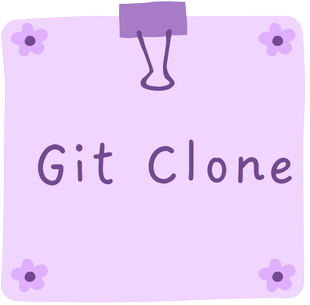

O git clone é usado sobretudo para apontar para um repositório existente e fazer um clone ou cópia deste repositório no novo diretório, em outro local.
O comando git branch permite criar, listar, renomear e excluir ramificações. Ele não permite alternar entre as ramificações ou reunir um histórico bifurcado de novo.

O git commit é usado para criar uma atualização instantânea das alterações preparadas em um cronograma de um histórico de projetos do Git.